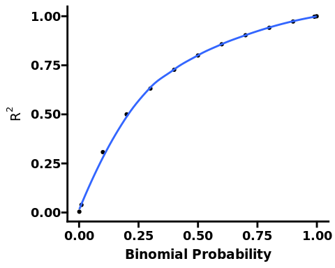

I decided to try and write up some of my experiments working with polygenic scores (PGSs) and their statistical properties. PGSs are indices that sum the total effect of many genetic variants a person might have on an outcome of interest, intended to serve as potentially useful predictors for health and disease. The genetic variants chosen for inclusion in PGS calculations derive from genome wide association studies (GWAS), which find potentially subtle genetic changes (single nucleotide polymorphisms [SNPs]) associated with diseases or other phenotypes. Most GWAS SNPs exhibit tiny individual effects on any given phenotype; however, it is argued that if many are counted together, a better picture of real-world risk may emerge. PGSs have been touted for diseases from coronary heart disease to breast cancer. There is some debate about the efficacy of PGS. The best (most predictive) scores yet published still explain only a small fraction of variance in any given outcome. There are many possible reasons for this. One of these, which is the focus of what I will be describing here, is that PGS are additive scores – they are ultimately computed in a very simple minded way, by adding up the individual effects for each variant in a straightforward linear fashion. This precludes the idea that some variants might interact with one another in more complex ways - for example, one variant might amplify the effect of another, or could even cancel it out. Such phenomena are examples of epistasis, which is pervasive in biological systems – genes almost never function in isolation, but rather are almost universally regulated by (and involved in regulating) the activity of other genes. Thus, it stands to reason that the failure of PGS to account for epistasis may be an important contributor to their failures in real world prediction.
A simple example
This critique is not novel, and is often dismissed by advocates of PGS. There are some theoretical arguments that epistasis, despite being pervasive, may not be a major source of overall phenotypic population variation. The fact that two genes may interact in the normal course of their biological functioning doesn’t imply that the co-occurrence of mutations in both genes results in epistatic effects, or that any epistasis that does result is a quantitatively significant contributor to extant phenotypic variation. The best way to make the case for this is to consider a simple example.
Suppose there is a disease with a baseline frequency in the population of 1%, which manifests as a defect in a continuous phenotype . Let’s further assume there is a mutation in gene , present in 0.2% of the population, which increases the odds of two-fold. Suppose also there is a mutation present in gene also present in 0.2% of the population, and this also increases the odds of twofold. Now, we can stipulate that and functionally interact – say that and both independently contribute to a biological pathway underpinning , but also negatively regulates as a form of feedback regulation 1. We can again stipulate for this example that the mutations and also interact because they both result in total loss of expression and , so that having both mutations gives rise to a 12-fold increase in odds, 3-fold more than expected from a simple additive model.
To model this effectively we can use log odds and log odds ratios (OR). We shall assume a baseline disease prevalence (C) of 1% and convert the relevant quantities to log odds/ORs.
We can compute the odds (and therefore prevalence) of a disease for a given genotype using following formula.
Where is the baseline odds, is the odds ratio due to , is the odds ratio due to , is the odds ratio due to the interaction, and are dummy variables indicating the presence or absence of each mutation, and is a switch we can use to turn the interaction term on or off for testing purposes. This is, essentially, a PGS model with an optional interaction term.
Given a population size of 100 million and the figures stipulated, most individuals (99.6%, ~99.6 million) would have neither mutation. Each single mutation would be present in about 0.2% of the population, or roughly 200,000 individuals for both α and β separately. The coincidence of both mutations would be extremely rare, occurring in only about 0.0004% of the population, or around 400 individuals.
We can compute the prevalence of disease in each group using the equation above, both with and without accounting for epistasis.
The question from the point of view of PGS scores and the impact of epistasis is, how much worse did the no epistasis model perform relative to the full model? For individuals with both mutations, the answer is clear: much worse! The no epistasis model underestimates their disease risk almost three-fold. However, these individuals are quite rare. At the population level, the no epistasis model correctly identifies ~99.8% of all cases. In a simple two variant example such as this one, there is no problem including the interaction term explicitly. However, for arbitrarily large genetic arrays, modelling every pairwise (or higher order) interaction term rapidly becomes incredibly computationally demanding. So, there must be a tradeoff.
A slightly more complex example
The effect sizes used in the above example are quite unrealistic. The very rarest and strongest single common SNP effect sizes may exhibit a 20-30% increase in disease risk. However, real diseases are governed by hundreds to thousands of variants, so the question regarding epistasis is really more about whether many small epistatic effects could undermine the accuracy of a test based on many small additive effects. To see what this looks like, consider the following example. In this example, we’ll have 10 SNPs linked to some disease state, each of which with an associated minor-allele frequency (MAF; we’ll consider the minor (less common) allele to be the “risk” allele of interest here - that is, the harmful version of the gene) and effect size, which we’ll report here as an odds ratio:
Here, the epistatic effect refers to the extra odds ratio associated with having both risk alleles from an epistatic pair. In the two SNP example from before, the epistatic effect was 3. As before, we can calculate overall odds ratios by summing the log odds ratios with the baseline log odds. Now, let’s simulate a genetic dataset based on these values, assigning SNPs in proportion to their MAF. Since all of the variants are quite rare, we should use a large sample size to guarantee good representation of all relevant genotypes. The dataset will be a “genotype matrix” with columns for the SNPs (plus the overall computed odds) and individual “study participants” as rows; we will use an indicator variable (0 or 1) to indicate abscence or presence of a given SNP. We will assume that the baseline odds (the odds for individuals with none of the mutations) is 1%, as before.
For simulated individuals that aren’t positive for any of our epistatic SNPS (3, 5, 7, 8, 9, and 10), there will be no difference in the odds_with_epi and odds_no_epi predictions. For individuals only positive for these SNPs, we should expect fairly large differences, and most people will be somewhere in between. We are now in a position to ask: at the population level, what does a failure to account for epistasis mean for prediction in a highly epistatic disease?
print(f"""Mean disease probability (without epistasis): {round(100* genotypes['prob_no_epistasis'].mean(), 3 )}%""")
Mean disease probability (without epistasis): 1.178%
Turns out, not much. The mean disease probability relates to the predicted prevalence of disease under each scenario. The “no epistasis” model undercounts by 0.03%. This amounts to ascertainment of 97.2% all cases captured by the full model – we can be confident in using this as a proxy for sensitivity since, by construction, the “with epistasis” model gives us an upper bound on disease probability for each case; the no epistasis model will always be strictly the full model.
Looking systematically
We can go further than this, however, and this is what I sought to do during my internship in the Nicodemus lab. I wanted to understand precisely how much heritability () a maximally predictive PGS could recover using an additive only model while systematically varying the “ground truth” of epistatic . To do this I devised a rather simple minded data generating function which would allow me to precisely specify the proportion of due to additive genetic variance and epistatic variance, as well as control the overall level of heritability.
The model specification is as follows. The phenotype for the -th sample is then given by:
Where:
is a genotype matrix of size n_samplesn_causal_snps, in which each entry is drawn from a binomial distribution
is the additive effects vector of size n_causal_snps, in which each entry is drawn from a standard normal distribution
is the matrix of pairwise interactions of causal SNPs, of size n_samplesn_epistatic, in which each element is the product of two elements of selected uniformly at random
is the interaction effects vector of size n_epistatic, in which each entry is drawn from a standard normal distribution
is the noise vector, each element of which is drawn from a normal distribution
The data generating function allows for systematic variation of several parameters: the number of causal SNPs, the number of epistatic pairs, the proportion of heritability due to additive effects versus epistatic interactions, and the overall heritability (by adjusting the “environmental” [noise] variance). Another feature is the ability to set the degree of overlap between the set of SNPs contributing to additive effects and those involved in epistatic interactions through the frac_epi_additive parameter. This addresses the potential non-independence of additive and epistatic genetic effects, a factor often overlooked in simpler models. The function generates pairwise interactions between selected SNPs and rescales both additive and epistatic contributions to achieve the specified variance fractions. This approach enables systematic investigation of how varying levels of epistasis and other salient features of the genetic architecture affect the predictive power of different polygenic score models. It does not provide for higher order interactions than pairwise.
The experiments I conducted were fairly simple. I vary the ratio of epistatic to additive variation, the total heritability, and the degree of overlap between the epistatic and additive SNP sets.
Code
from sklearn.linear_model import LinearRegressionfrom concurrent.futures import ThreadPoolExecutorfrom itertools import productfrom model_functions import model_simulation_generic# Set parameter values for simulations later ontotal_heritabilities = [0, 0.2, 0.9] # test high and low heritabilityadditive_proportions = [0.5, 1] # test high and low epistasisfrac_epi_additives = [0, 1] # % of epistatic SNPs that are also additiven_snps =50# total SNPs - doesn't impact results but slows everything down :)# Statistical params# Note that overall sample size in each condition is n_samples * n_reps, but# n_samples:n_reps ratio dictates a speed/memory usage tradeoff# (i.e., higher n_samples means more RAM usage but faster if not OOM)n_samples =50000n_reps =1all_combinations =list( product(total_heritabilities, additive_proportions, frac_epi_additives))# Convert to DataFramevariances = pd.DataFrame( all_combinations, columns=["total", "additive_proportion", "frac_epi_additive"],)# Calculate additive and interaction heritabilitiesvariances["additive"] = variances["total"] * variances["additive_proportion"]variances["interaction"] = variances["total"] - variances["additive"]variances.drop(columns=["additive_proportion"], inplace=True)with ThreadPoolExecutor() as executor: future_to_params = { executor.submit( model_simulation_generic,lambda: LinearRegression(), n_samples=n_samples, n_snps=n_snps, n_causal_snps=20, additive_variance=row["additive"], interaction_variance=row["interaction"], n_pairs=5, frac_epi_additive=row["frac_epi_additive"], maf=0.5, n_reps=n_reps, ): ifor i, row in variances.iterrows() } results = pd.concat([future.result() for future in future_to_params])mean_results = ( results.groupby( ["additive_variance","interaction_variance","frac_epi_additive","true_total_variance", ] ) .agg( mean_adj_r_squared=pd.NamedAgg( column="adj_r_squared", aggfunc=lambda x: round(abs(x.mean()), 3) ) ) .reset_index())r = mean_results[mean_results["additive_variance"] ==0.45]["mean_adj_r_squared"].mean()HTML(mean_results.to_html(index=False))
additive_variance
interaction_variance
frac_epi_additive
true_total_variance
mean_adj_r_squared
0.00
0.00
0.0
0.0
0.004
0.00
0.00
1.0
0.0
0.004
0.10
0.10
0.0
0.2
0.169
0.10
0.10
1.0
0.2
0.127
0.20
0.00
0.0
0.2
0.194
0.20
0.00
1.0
0.2
0.197
0.45
0.45
0.0
0.9
0.807
0.45
0.45
1.0
0.9
0.815
0.90
0.00
0.0
0.9
0.897
0.90
0.00
1.0
0.9
0.900
Note that we have only two scenarios directly relevant to our original question here: a “highly epistatic” scenario where half of all heritability is due to epistatic variation (following the logic of the preceding discussion, this should be implausibly high), and a “highly additive” case where 80% of the heritability is from additive genetic variance. We can see clearly in the cases where both the additive and epistatic variance are equal to 0.45 (giving a true total of 0.9), the variance explained by our additive only linear PGS model is ~0.81. If the true additive heritability is 0.45, this means we have have an excess of 0.36 due to “bleedthrough” from the non-linear process; i.e., around 80% of the ground truth epistatic heritability bleeds into the additive model.
The cause of this bleedthrough relates to the fact that sum of two random variables is correlated with their product. So, even an “interaction only” data generating process will have some non-zero , and it follows that a model with both additive and interaction terms will perform even better. We can look at this analytically, and say something more general about how much variance an additive model can explain for a non-additive process.
Given
and
where A and B are independent random variables, the quantity we are really interested in in . It can be shown this evaluates to the following expression:
Derivation
Suppose we have
and
where A and B are independent random variables.
We know that in general
and in our case we have
or, substituting
With some algebra and considering the independence of A and B we can see that
Furthermore (in general)
And for our case
Here, we can substitute our formula for covariance
To get the denominator in terms of the moments of our random variables, we can show that
and that
We can plug these relationships for the standard deviations back into the denominator above to get a formula for the correlation between the product and sum of independent random variables (not performed here).
This then will be the correlation between the product and sum of independent random variables. We can use this to calculate the predicted of the linear model lm(O ~ S) (additive only model) where O is the product of two variables and S is the sum of the same two random variables.
A notable feature of this expression is that the magnitude of correlation depends on the expected values of both A and B. In the case of SNPs, we are usually interested in binomial random variables, and in this case, the expected value relates to the binomial probability. For SNPs, this amounts to the MAF. I claim that this implies that the degree to which an additive model can capture the variance of an epistatic data generating process is an increasing function of the MAFs of epistatic alleles. Before proceeding, we should note that the above expression only holds for the two variable case, and it is relatively straightforward to extend it to the polygenic case.
Let’s denote and as the th pair of independent random variables, as the th epistasis coefficient, and and as the respective linear coefficients. The new equations for and would be:
Now we can calculate the correlation between and in a similar way as before, yielding the relationship:
Derivation
To generalize the formula for a sum over variables, we’ll need to extend our calculations. Let’s denote and as the th pair of independent random variables. The new equations for and would be:
Now we can calculate the covariance of and in a similar way. The covariance would be a sum over all pairs of and :
Substituting, we get:
This will simplify to:
Next, we can generalize the formulas for the standard deviations of and . For , we have:
And for , we get:
Now, we can plug these results into the correlation formula:
We can check this formula with some simulated data as a sanity check (using R here because it’s a bit more comfortable for me for plotting and quick simulations). My strategy is:
generate vectors drawn from binomial distributions characterised by a range of probabilities (since that maps what we’re using for SNPs, although the distribution shouldn’t matter), compute “empirical” versions of and from these vectors, and calculate their correlations at each level of binomial probability
compute theoretical correlations between and purely from the pre-specified moments of the binomial distributions (i.e., the probability and sample size)
Compare the theoretical and empirical (squared) correlation coefficients
Code
corr_os <-function(e_a, e_b, var_a, var_b, betas, gammas, deltas) { cov_os <-sum(betas * (gammas * var_a * e_b + deltas * var_b * e_a)) var_o <-sum(betas^2* (var_a * e_b^2+ var_b * e_a^2+ var_a * var_b)) var_s <-sum(gammas^2* var_a + deltas^2* var_b) corr_os <- cov_os /sqrt(var_o * var_s)return(corr_os)}# Function to run a single simulationsimulate_compare <-function(prob_a, prob_b, betas, gammas, deltas, n, n_trials) { e_a <- prob_a * n_trials e_b <- prob_b * n_trials var_a <- n_trials * prob_a * (1- prob_a) var_b <- n_trials * prob_b * (1- prob_b) theoretical_r2 <-corr_os(e_a, e_b, var_a, var_b, betas, gammas, deltas)^2 a <-matrix(rbinom(n *length(prob_a), n_trials, prob_a), nrow = n) b <-matrix(rbinom(n *length(prob_b), n_trials, prob_b), nrow = n) s <- a %*% gammas + b %*% deltas o <-rowSums(a * b * betas) empirical_r2 <-summary(lm(o ~ s))$r.squaredreturn(c(empirical_r2, theoretical_r2, mean(prob_a)))}# Run the simulation for a variety of parametersset.seed(123)num_sims <-10num_vars <-10n <-1000n_trials <-2probs <-c(0.001, 0.01, seq(0.1, 0.9, 0.1), 0.99, 0.999)results <-data.frame(empirical_r2 =numeric(num_sims *length(probs)),theoretical_r2 =numeric(num_sims *length(probs)),prob_a =numeric(num_sims *length(probs)))row_index <-1for (prob in probs) {for (i in1:num_sims) { prob_a <-rep(prob, num_vars) prob_b <- prob_a betas <-rep(1, num_vars) gammas <-rep(1, num_vars) deltas <-rep(1, num_vars) r2_values <-simulate_compare( prob_a, prob_b, betas, gammas, deltas, n, n_trials ) results[row_index, ] <- r2_values row_index <- row_index +1 }}corr_r2 <-cor( results$empirical_r2, results$theoretical_r2,use ="complete.obs")library(ggplot2)library(ggprism)library(dplyr)ggplot( results |>group_by(theoretical_r2) |>summarise(empirical_r2 =mean(empirical_r2)),aes(x = theoretical_r2, y = empirical_r2)) +geom_point() +geom_smooth(method = lm) +annotate("text",x =0.25, y =0.75, label =bquote(R^2== .(round(corr_r2^2, 3))) ) +labs(x =bquote(Theoretical ~ R^2), y =bquote(Empirical ~ R^2) ) +theme_prism()
Using the same simulated data, we can now take a look at my claim above. We will again look at the correlation between and . If we vary the binomial probability (stand-in for MAF in our context), what happens to the ?
Code
ggplot( results |>group_by(prob_a) |>summarise(theoretical_r2 =mean(theoretical_r2)),aes(x = prob_a, y = theoretical_r2)) +geom_point() +geom_smooth(method = loess, se =FALSE) +labs(x ="Binomial Probability", y =bquote(R^2) ) +theme_prism()

As expected, the higher the binomial probability, the more closely an interaction driven data generating process resembles an additive one. This seems to explain the “bleedthrough” of interaction terms into additive linear models we have been observing. Indeed, the binomial probability used by default in the sim_genmatrix function that creates genotype matrices in our simulations is 0.5, and from the chart above we can see that at this level the predicted bleedthrough is 80%, which closely matches what is observed.
Note that we haven’t typically considered MAFs as high as 50% until this point. It may be argued that we are giving additive only PGS models too much of a chance by using such a high MAF in simulations. However, the reality is the opposite – the coincidence rate of epistatic SNPs falls off rapidly with decreasing MAF. Therefore, epistatic variation will fail to manifest in a meaningul heritability effect for one of two reasons: if the MAF is high, the variance will bleed through and behave like an additive term; if the MAF is low, the coincidence of both variants will be so rare as to not be meaningful.
Footnotes
This could be shown in a molecular genetics context if, for example, mice with total genetic deficiency in both and have a phenotypic effect that is larger than the sum of the the effects of deficiency in or separately (since the deleterious effect of deficiency in would have simultaneously been blunted by loss of its negative regulatory activity towards ). Note first of all that it does not follow from this scenario that is epistatic with . For to epistatic with , would have to specifically affect the ability of to negatively regulate the function of , but this is not guaranteed. It might be that affects the ability of to independently regulate without affecting its feedback function. The key observation here is that genes are pleiotropic, that is, have multiple functions, and a mutation in any given gene does not necessarily interfere with all of its functions.↩︎